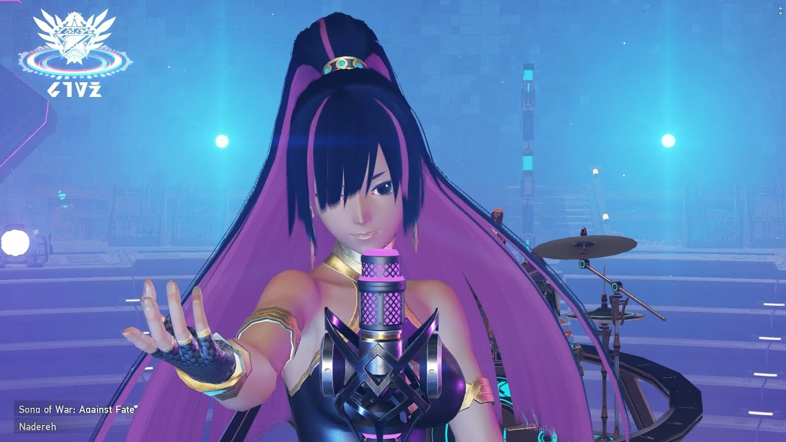
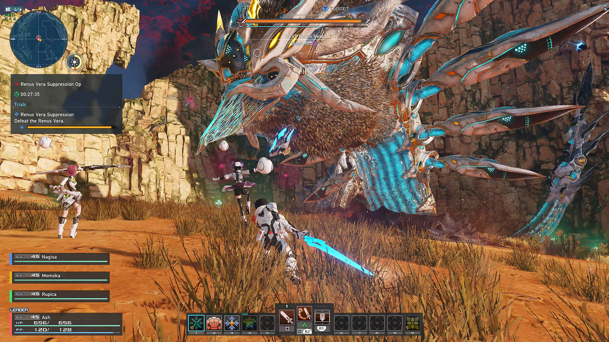
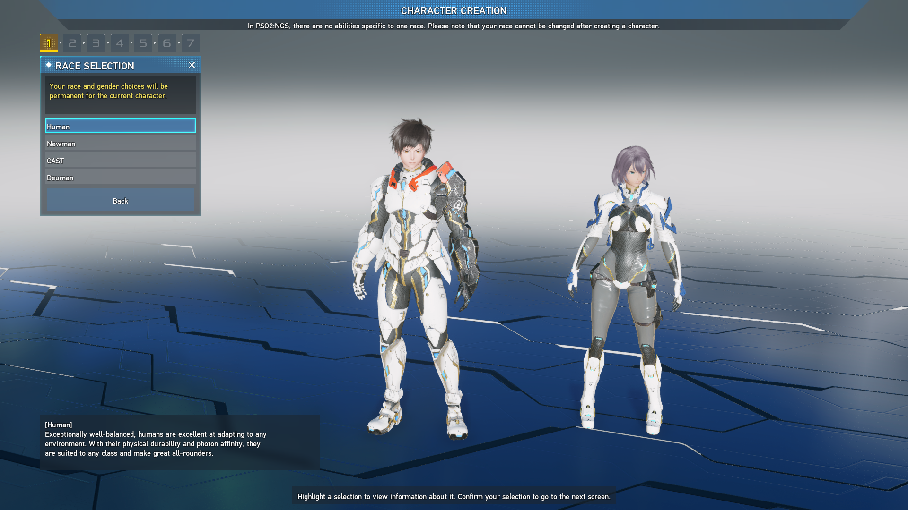

Arks são os bravos guerreiros que defendem o planeta halpha contra as misteriosas formas de vida conhecidas como DOLLS. Existem alguns conhecidos como meteoros que freqüentemente pousam em halpha do espaço sideral através de vagens.
O que é PSO2 New Geneses ?
O último título da mais recente série de rpg online do Japão ! Crie seu próprio herói único com o personagem final Personalizações de criação e leve-os em aventuras sem fim.
Ambientado em um campo aberto sem interrupções, uma variedade de novos sistemas, como corrida, deslizamento e jogo cooperativo de até 32 jogadores, conecta e expande este mundo de aventura, criando novos encontros e surpresas. Com controles simples e ação emocionante, você pode desfrutar do mais alto nível de combate rápido neste jogo online gratuitamente.
A história do pso2 New Genesis





Classes
Hunter
Uma das classes mais orientadas para o corpo a corpo, o Caçador, é especializado em causar danos de perto. A natureza acelerada de seu arsenal torna o Hunter perfeito para mobbing, com habilidades defensivas como Hunter Physique, Flash Guard, Iron Will e Omnidirectional Guard praticamente aumentando a capacidade de sobrevivência. Por sua vez, um bom conjunto para uma Subclasse seria equilibrar a falta de um componente de longo alcance do Hunter, tornando-o ideal para recém-chegados ao New Genesis.
Fighter
Voltados para o combate corpo a corpo ao extremo, os Fighters preferem colocar-se perigosamente perto dos oponentes para capitalizar a velocidade e o combate de alto risco. Sua Vantagem de Derrota e Vantagem de Derrotar PP aumentam seu dano contra inimigos derrubados, bem como recuperam PP ao combatê-los. Dada a sua natureza potencialmente esponjosa, a subclasse perfeita para um lutador é algo que pode aumentar sua capacidade de sobrevivência.
Ranger
Ao contrário do Gunner de curto alcance, o Ranger de médio alcance dá aos jogadores espaço para respirar para ajudar os atacantes de perto, mantendo-se longe o suficiente para evitar ataques críticos. Embora não sejam tão tanques em comparação com o Hunter, os Rangers têm excelente resistência contra doenças de status, cortesia de Bad Condition Ward e Bad Condition Reduction, o que aumenta sua capacidade de sobrevivência natural. Além disso, sua capacidade de equipar Rifles permite que os jogadores acessem dardos teleguiados - perfeitos para atacar vários inimigos de perto.
Braver
Se há alguma classe no jogo que capitaliza o domínio do jogador em suas mecânicas, é o Braver. Equipados com a Katana e o Arco, eles podem entrar em combate a qualquer distância, desde que sejam capazes de dominar suas habilidades técnicas bastante intensivas. No entanto, as habilidades do Braver, como Mighty Guard, Brave Spirit e vantagens exclusivas de armas, incentivam qualquer abordagem que os jogadores tomem com mobilidade extra e opções defensivas.
Bouncer
Uma Nova Classe Genesis relativamente móvel que domina os céus, o Bouncer pode usar tanto Soaring Blades quanto Jet Boots para usar Photon Arts e Techniques para continuar derrubando oponentes. Habilidades como Defeat PP Gain, Defeat Amplifier e Partial Destroy Advantage dão ao Bouncer muitas vantagens saudáveis ao derrubar inimigos consistentemente.
Waker
Em vez de contar com o combate direto, o Waker - baseado no Summoner do PSO2 - é especializado em convocar Familiares para cumprir suas ordens. Cada Familiar que eles possuem tem diferentes habilidades de combate, dando ao Waker amplo controle sobre seu desempenho em combate. Eles também têm um conjunto bastante saudável de habilidades que aumentam a capacidade de sobrevivência, como Retro Friends Rescue, que fornece HP com base em uma certa porcentagem, ou Welfare Management, que reduz o dano além de aumentar as curas de Restasigne.
Jogue de graça agora
Aproveite o combate, a história, a comunicação e muito mais gratuitamente, com a opção de pagar por avatar de luxo e itens de conveniência!